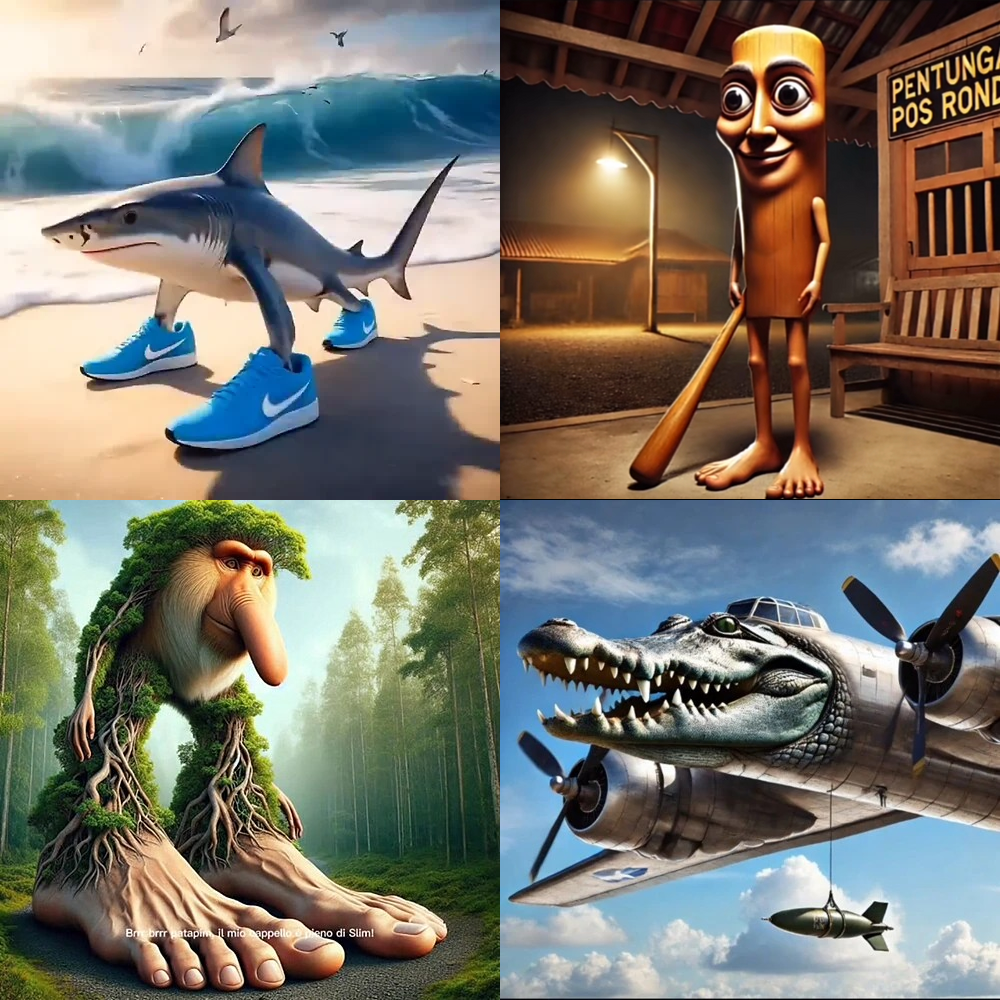

About Italian Brainrot

Italian brainrot is characterized by absurd images or videos created by generative artificial intelligence. It typically features hybrids of animals with everyday objects, food, and weapons. They are given Italianized names or use stereotypical cultural markers and are accompanied by AI-generated audio of an Italian man's narration, which is often nonsensical. The names of these characters often have Italian suffixes, such as -ini or -ello. These characters combine elements of surrealism, visual anxiety (uncanny valley) and internet irony, reflecting the post-ironic humor of Generation Z. The term brain rot was Oxford Word of the Year in 2024, and refers to the deteriorating effect on one's mental state when overconsuming "trivial or unchallenging content" online. It can also refer to the content itself. Online users often use this label to acknowledge the ridiculousness of Italian brainrot, while recognising the growing amount of AI slop present online. Fans have created various stories featuring characters from Italian brainrot, forming a type of Internet folklore with overly dramatic storylines and voices.More info